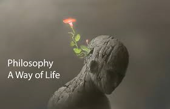

Hello everyone, I'm Ron Zandro Y. Morante. I'm currently studying at the University of Perpetual Help, Molino Campus. I'm pursuing a degree in Computer Science, majoring in Data Science. I'm a 1st-year student and new to this field. My goal is to become a well-rounded programmer, flexible in various areas like game development, cybersecurity, and more.
When i was a child, I always wanted to become a scientist. I've also been a gamer since I was 4 years old , spending time in front of the computer surfing the internet, playing games, and learning about science. I've always been fascinated by computers, but my interest in programming really took off when my brother got a job as a programmer. That’s when I realized how interesting programming is – there's so much to learn and build, and it felt like a whole new world. When I was younger, I used to think that if I became a programmer, I could atleast work for NASA because of my love for space and stars. But as I grew older, that dream felt a bit distant. In high school, I shifted my dream and decided the path ill take will be a versatile programmer who can do many things, which is still cool because Ive always admired my brother and his work.
My philosophy in life is being family-oriented. I care deeply about my family because they are the ones I can trust, and I want to dedicate all my future achievements to them.
